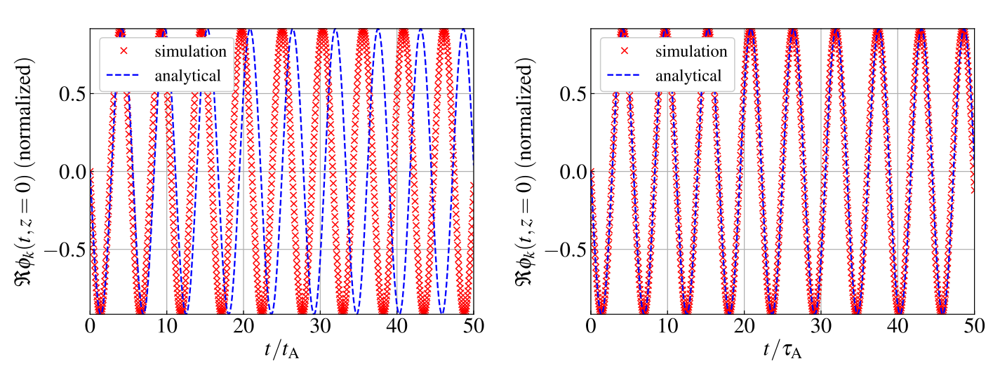
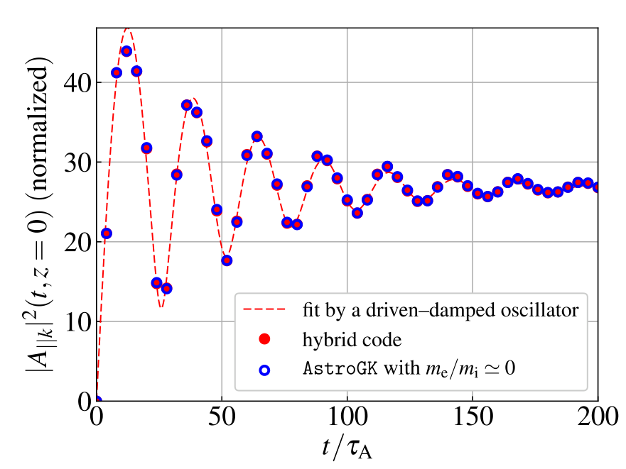
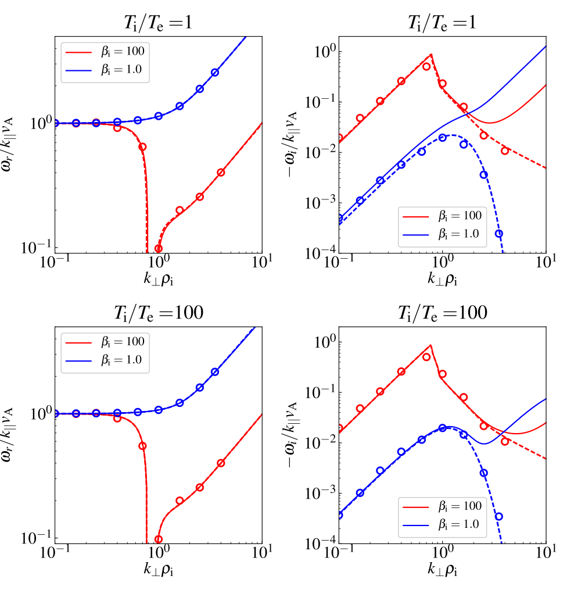
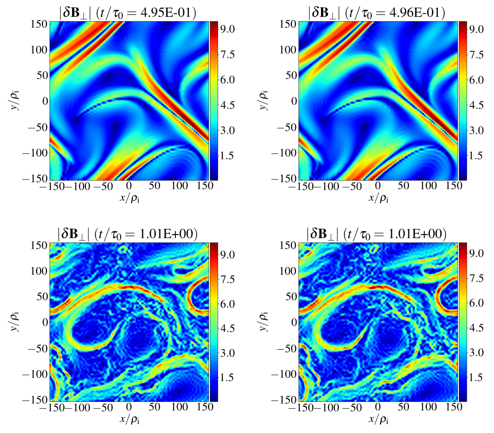
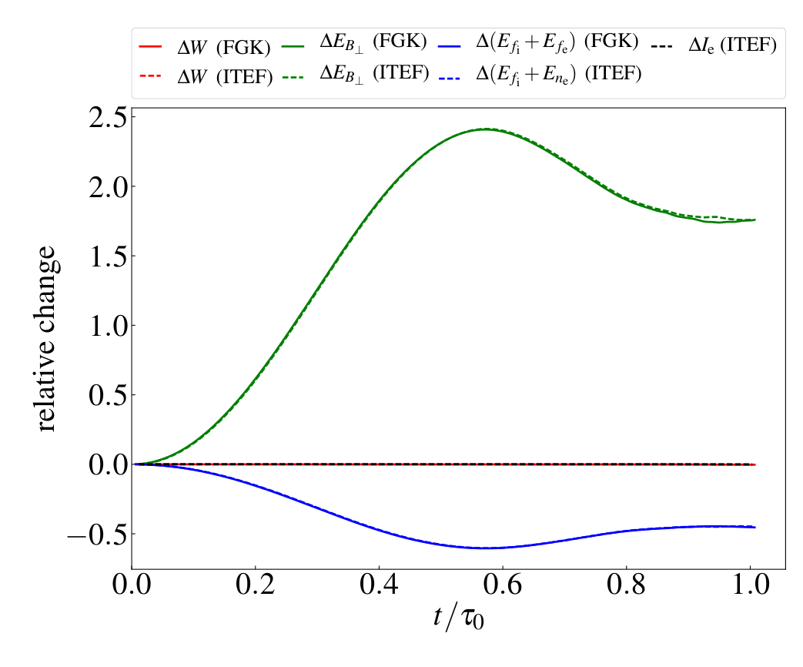
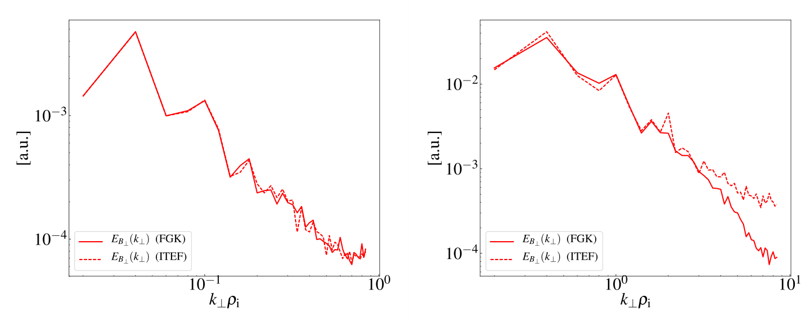
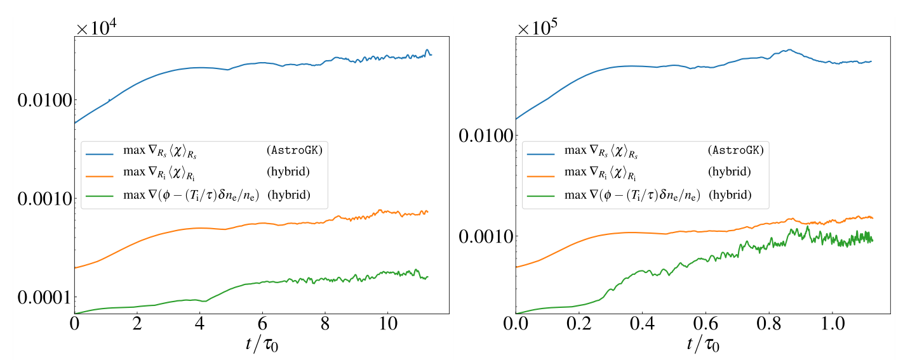

保留离子动理学，省去电子快速尺度
A Hybrid Gyrokinetic Ion and Isothermal Electron Fluid Code for Astrophysical Plasma
核心判断：本文的价值是把已有的回旋动理学离子／等温电子流体模型接入 AstroGK 的隐式响应矩阵框架，使离子尺度电磁计算显著变便宜。它验证了数值实现和若干模型极限；它并未证明省去电子动理学后，所有阻尼、亚离子谱或电子加热都仍然正确。
以下页码均为上传 PDF 页码（共 21 页，与正文印刷页码对应）。完整阅读正文第 1–18 页及致谢，检查第 19–21 页参考文献。全文 7 幅编号图，无表格、无附录、未发现额外实质性未编号插图。未取得独立补充文件、源码快照或原始运行数据。
1. 为什么需要这类混合模型？
弱碰撞天体等离子体的平均自由程可与宏观系统相当。MHD 能描述大尺度流动，却不能充分描述离子回旋半径附近的相混合、Landau 阻尼和速度空间熵级联；直接求解六维 Vlasov 系统又太昂贵。回旋动理学先平均掉快速回旋角，将相空间降为三维位置加二维速度，但电子速度仍远大于离子速度，使高速度分辨率的三维电磁计算与参数扫描成本很高。（§1，页 1–2）
作者采用的第二次降阶是电子／离子质量比展开，并额外采用等温电子闭合。保留离子完整的回旋动理学响应，电子则只贡献密度、平行流和压力反馈。这不是“把所有离子改成流体”，也不是保留离子回旋运动的全动理学离子混合 PIC：本文已要求低频，不能模拟离子回旋共振频段。作者将其用于均匀、直背景磁场的 slab 几何，背景密度和温度也均匀。（§1–2，页 2–4）
| 层次 | 保留／省略 | 本文贡献的证据 |
|---|---|---|
| 物理模型 | 保留离子有限回旋半径、相混合和碰撞；去掉电子质量相关快速响应及电子温度扰动。 | 模型来自 Schekochihin 等 2009，本文不是这一模型的首次推导。 |
| 数值实现 | 电子流体与 Maxwell 约束联立隐式求解，离子求解器沿用 AstroGK。 | §3 的消元、响应矩阵和时间推进是主贡献。 |
| 验证 | 解耦流体、无质量电子极限、参数化色散、二维非线性基准。 | 图 1–7 给出一致性和模型差异，未给出三维加热扫描成果。 |
适用边界：主要目标是离子尺度能量分流与离子动理学，并非电子尺度的完整动力学。报告不将“在更小尺度运行得动”视为“该尺度的所有物理都可信”。高磁压比参数有线性测试支撑，但二维非线性基准主要采用 ，不能自动推广为全部高磁压比非线性情形。（§5–6，页 12–18）
2. 模型如何闭合？
2.1 基础变量与两次近似
设 ，物种 的平衡分布 为均匀 Maxwellian。扰动分为 Boltzmann 响应与非 Boltzmann 部分 ：
这是原式 (1)。 是回旋中心；、，温度以能量单位计。 并不等于总分布扰动。基本 ordering 为
这解释了各向异性、低频、小扰动和强背景场要求。这里的背景均匀性允许周期边界，不是一般托卡马克或恒星器全局几何。（页 2–3，式 (1)–(6)）
原式 (3) 的动理学推进可写为
各项依次是局部演化、沿场自由流、垂直非线性对流、电磁驱动和碰撞。回旋平均在垂直 Fourier 空间引入 Bessel 函数，保留有限回旋半径效应。碰撞算子含俯仰角散射及能量扩散，并满足相应守恒要求；其详细实现沿用原 AstroGK 文献，而不是由本文重新展示。（页 3–4）
为减少显式场时间导数，求解器使用 complementary distribution：
对应原式 (8)，、。数值未知量是 ，但物理能量须由完整 计算，不能直接拿 替代。（页 3、5）
电子采用 。展开首先导出沿总磁场线的电子温度约束 ，而不是自动导出全空间等温。作者额外假设 ，以磁力线缠结作为可能动机。因此“质量趋零”和“等温闭合”应被分开理解。此时
原式 (11) 只保留电子分布的这个低阶形式，电子动力学已无法提供真实电子 Landau 耗散。（页 4）
2.2 两条电子演化方程
为读懂原式 (12)，在本节暂记 、、，并将原式还原为等价实空间写法：
Poisson 括号为 。第一条演化密度与磁压缩的组合，并包含沿场流动和磁场扰动导致的耦合；第二条是电子平行力平衡与感应方程的组合，电子等温压力梯度仍通过 作用于场。无质量电子并不意味着电子完全无反馈。（式 (12a,b)，页 4）
2.3 三条场约束与信息交换
以下保持原式 (13) 的有量纲约定；每式对应一个垂直 Fourier 模：
分别表达准中性、平行 Ampère 定律与垂直压力平衡。、、、。原式 (10) 定义
这里 是第一类 Bessel 函数， 是修正 Bessel 函数。三种离子速度矩把分布反馈给电子与场，反过来场又推进离子分布。这种自洽闭合与仅在固定电磁场里追踪离子轨道有本质差别。（页 4）
结构上的关键：FGK 中两个物种分布演化后求场；混合系统中 本身成为演化量，平行电子流由已经推进的场和离子矩算出。不能仅删除 FGK 的电子数组而保持场求解不动。（页 4 末段、§3.2）
3. 守恒量不只是诊断，也是耗散设计约束
混合模型的广义能量为原式 (16)：
它由离子分布自由能、电子密度压缩自由能、磁扰动能组成。这里的电子密度自由能不是电子完整速度空间熵，也不是已经转化成温度的热量。无外驱、无碰撞时 守恒。二维 还具有
这是原式 (17)，不能移植成一般三维不变量。图 5 的双重守恒检查因此比仅看总能量更有识别力。（§2.1，页 5）
离子碰撞仍能消耗离子熵，但电子动理学被删去后，KAW 级联没有真实电子耗散终点。作者对 加高阶人工耗散，而不是任意衰减所有电子密度扰动。其归一化 Fourier 形式可直接从式 (23a) 读出：
帽号表示本文归一化；它是示意抽出耗散项的写法，不与前面的有量纲场量混用。正整数 使耗散集中在网格小尺度。Boltzmann 电子响应满足 ，此项应随之消失。相应能量贡献为
这是原式 (20) 的耗散部分，平方可理解为相应导数的范数。它给出无条件非正的能量方向，不能证明耗散的真实微观机制是电子碰撞。原式 (18) 的实空间高阶算子符号应结合式 (20) 与式 (23a) 的负 Fourier 符号核对，不能在实现任意阶算子时只照搬形式而忽略奇偶号。（§2.2–2.3，页 5–6）
作者未加入 hyperresistivity；认为电势充分衰减后，亚离子尺度的非线性 演化不会造成问题，并引用尚在准备的三维工作 [54]。本文并未给出那项三维结果，因此这不能被当作本报告已验证的证据。（页 6、参考文献页 20）
4. 算法如何把新增电子方程装进原求解器？
4.1 离散结构与每一步的数据流
垂直平面用 Fourier 谱表示，平行方向用紧致有限差分。速度坐标采用 、 及 。这里 是数值速度坐标的定义，不应自行改成有量纲动能。归一化使用 、、；势、磁场和分布扰动还带回旋尺度与平行尺度之比，复现时须遵循原式 (21)，不能只归一化坐标。（页 6–7）
时间隐式度 和空间偏置 控制线性差分。 为时间／空间中心格式，线性部分二阶；文中所述无条件稳定性属于这个线性推进，不属于含显式非线性项的整个代码。（式 (27)，页 7）
- 在当前时间层，用 FFT 在实空间计算 Poisson 括号，再回到 Fourier 空间；用三分之二截断去混叠。
- 把离子新时刻分布写成 ，定义场增量 ，其中 。旧场与非线性项组成已知源，先求非齐次部分。
- 通过逐个施加单位场响应，构造 。这是原式 (30)–(32) 的 Green 函数／响应矩阵思想。
- 利用准中性与平行 Ampère 约束，消去新时刻电子密度和电子平行速度。将响应矩阵代入电子演化及剩余场约束，得到原式 (41) 的联立系统。
- 求场增量，再重建离子分布，最后由约束恢复 与 。评估非线性 CFL 条件并在需要时修改下一步时间步。
这是原式 (41)，此处 是原文数值段的归一化记号。每个块大小由平行网格决定，整个稠密场矩阵维度为 。新电子方程引入不同平行网格点之间的耦合，矩阵元素比 FGK 复杂，但最终场矩阵尺寸没有增加。初始化时生成并复用矩阵，时间步改变才更新。这比直接反演同时覆盖空间、速度和物种的大矩阵便宜得多。（页 7–10，式 (28)–(42)）
非线性项用可变时间步的三阶 Adams–Bashforth。原式 (43)–(44) 在等时间步时化为熟悉的权重：
这是对原可变步长公式的等步长特例整理；实际自适应计算不能固定使用这三个系数。非线性三阶也不意味着整个时间离散三阶，因为线性部分仍为二阶。（页 10–11）
外驱沿用 AstroGK 的振荡天线：以 替换相关方程中的势，对应外加平行电场和电流。可调驱动振幅、模数、波数、频率和去相关率。能量诊断要同时记录天线输入项 ，不能把受驱系统的能量增长误判为数值不守恒。（§3.4，页 11）
4.2 为何线性已隐式，移除电子仍能大幅加速？
关键并非平行自由流；它已经隐式。真正仍限制时间步的是垂直非线性对流，其中电子沿扰动磁场运动产生的磁扰动项可非常快。原式 (46) 给出量级估算：
这里 是电漂移速度量级。估算依赖临界平衡、离子尺度和相应参数排序；对本文基准 且相关项占优时，速度比约为 。不能无条件忽略式中温度比与各项主导区间。（§4，页 11–12）
论文的总收益估计把两个来源相乘：时间步可放大约 ，加上删掉电子分布后每步分布推进的成本约减半，因此
摘要的“约百倍”是量级表述。真实收益还受矩阵重建、并行通信、速度网格和硬件影响；少存一个物种分布也不等于总内存严格减半。图 7 是时间步机制的直接佐证，CPU 成本需与每步成本一起核对。（页 14、16）
5. 全部原图：从模块验证走到模型差异
本节全部图片直接裁自用户上传 PDF，保持完整面板、坐标和图例；点击可查看原分辨率。下面的中文图注与解释为报告整理，不改变原图内容。

左、右分别使用 8 与 32 个平行网格点；模拟与解析振荡作比较。
来源：上传 PDF《A Hybrid Gyrokinetic Ion and Isothermal Electron Fluid Code for Astrophysical Plasma》，arXiv v2，PDF 第 13 页，原 Figure 1。
怎么读：横轴为归一化时间 ，其中 ；纵轴为 处归一化电势 Fourier 分量的实部。红色叉号是模拟，蓝色虚线是解析解。参数为 、。作者人为置零离子速度矩并关闭非线性，使电子流体脱离离子动力学，成为式 (50) 的简谐振子。（§5.1，页 12–13）
左右面板：左侧 的振荡幅度仍大致合理，但随时间出现明显相位漂移；右侧 与解析解在多个 Alfvén 时间内吻合得多。改进主要说明平行离散误差得到控制，而不是稳定性本身就保证精度。
支持与边界：支持电子流体隐式求解模块及其空间分辨率依赖的实现检查。由于离子矩被人为删除，它不能验证离子耦合、Landau 阻尼或非线性项；只有两个网格点数，也不是严格的误差阶收敛图。

混合代码与电子质量趋零的 AstroGK 对比，并以受驱阻尼振子拟合。
来源：上传 PDF《A Hybrid Gyrokinetic Ion and Isothermal Electron Fluid Code for Astrophysical Plasma》，arXiv v2，PDF 第 14 页，原 Figure 2。
怎么读：横轴为 ，纵轴实际是归一化的 ，不是势的带符号值。红实心点是混合代码，蓝空心点是 AstroGK，红虚线是拟合。起初的过冲和衰减振荡趋向有限受驱响应，不应解释为无驱动自由衰减。（图 2，§5.2，页 13–14）
比较条件：AstroGK 使用 ，因此检验的是混合模型应当逼近的无质量电子极限，不是真实质量比下完整电子物理的等价性。，参数仍为 ，驱动频率 。
定量证据：理论复频率为 ，拟合为 。按显示的舍入值计算，实频率相对偏差约 ，阻尼幅值约 。作者称接近理论值；报告强调阻尼相对偏差比频率大，且原文未给拟合置信区间，不能把曲线视觉重合等同于阻尼的高精度测量。

四面板对照两种温度比与两种离子 beta：左列为实频率，右列为阻尼率。
来源：上传 PDF《A Hybrid Gyrokinetic Ion and Isothermal Electron Fluid Code for Astrophysical Plasma》，arXiv v2，PDF 第 15 页，原 Figure 3。
坐标和图例：横轴均为 ，左纵轴 ，右纵轴 ，均为对数坐标。上排 ，下排 ；红线 ，蓝线 。实线是 FGK 解析色散，虚线是 GKI/ITEF 解析色散，空心圆是混合数值结果。（图 3，页 15；讨论页 13）
左上与左下：数值点随混合解析分支变化，FGK 与混合的实频率也接近。高 beta 红色分支在离子尺度附近有显著低谷；对数图中接近零的部分不能据图给出精确最小值或擅自认定为新的不稳定模。
右上：进入 后，实虚线明显分离，尤其蓝色混合曲线快速下降，FGK 仍有较强阻尼。右下：温度比增大并没有消除所有差异；红色高 beta 情形在展示范围内相对更接近，蓝色低 beta 情形仍明显不同。
结论：数值点贴近本模型解析解，支持代码正确求解所选模型。模型与 FGK 的阻尼差异则来自缺失电子 Landau 阻尼；这种差异不是代码验证失败。原文将 列为阻尼差异不显著的例外，但不据此声称电子效应在该参数下严格为零。此图是全文对模型误差最直接的证据。

左列 FGK、右列 GKI/ITEF；上排电流片形成阶段，下排湍流阶段。
来源：上传 PDF《A Hybrid Gyrokinetic Ion and Isothermal Electron Fluid Code for Astrophysical Plasma》，arXiv v2，PDF 第 16 页，原 Figure 4。
怎么读：四图都显示 的空间幅值，坐标为 ，暖色表示更强的垂直磁扰动。色条是代码图示幅度，不应擅自转换为 tesla。虽然讨论的是电流片形成阶段，图中并未直接画电流密度。（图 4，页 16）
四面板：左上与右上时刻分别为 与 ，条带和集中结构几乎相同；左右下图均为 ，大尺度卷曲与丝状结构相近，细小结构出现差异。相近快照而非完全同一时间层的事实值得保留。
支持与边界：支持在 MHD 惯性尺度范围内非线性耦合产生相近的二维演化。不能由此推出三维湍流统计、精确重联率或离子／电子加热率相同，也不能从磁幅值图直接量化耗散位置。其证据应与图 5 的守恒、图 6 的谱一起阅读。（§5.3，页 13–14）

实线为 FGK、虚线为混合；比较总广义能量、磁能、分布／密度能与二维不变量。
来源：上传 PDF《A Hybrid Gyrokinetic Ion and Isothermal Electron Fluid Code for Astrophysical Plasma》，arXiv v2，PDF 第 17 页，原 Figure 5。
怎么读：横轴 ，纵轴为相对于初始值的变化。红色代表 ，绿色代表 ，蓝色为 FGK 的 或混合的 ，黑虚线为混合二维不变量 。各分量相对变化的归一化不应被擅自当成同一个总能量分母，所以不能把绿、蓝曲线直接逐点相加。（图 5，页 17）
观察：两模型同色实虚线很接近；磁能先增加再回落，分布／密度自由能相应变化，总广义能量和 接近不变。图中零附近线条重叠，无法仅靠图像读出极小守恒误差。
可定位的数值：正文另述零碰撞测试：在 电流片形成之前， 与 相对误差分别在 与 量级。该陈述来自页 14，而非图中测量。之后作者认为需要碰撞来适当耗散小尺度能量。这些误差不能延伸到整个晚期湍流时段，更不能等同于真实热量的测量。

左侧 MHD 惯性区谱基本重合，右侧跨离子尺度后混合谱相对更浅。
来源：上传 PDF《A Hybrid Gyrokinetic Ion and Isothermal Electron Fluid Code for Astrophysical Plasma》，arXiv v2，PDF 第 17 页，原 Figure 6。
怎么读：横轴 ，纵轴为垂直磁能谱 ，标记为任意单位；红实线为 FGK，红虚线为混合。左右面板是不同盒子尺度的计算，并非同一次计算的随意分段。（图 6，页 17；§5.3，页 14）
左面板：文中给出波数范围 ，谱在展示范围内非常接近。右面板：范围为 ，在较高波数处混合结果保留更多磁能，下降比 FGK 慢。没有拟合区间、误差条或谱指数表，因此这里不报告一个伪精确的幂律指数。
作者解释与证据限度：作者认为差异可能与离子动理学区的垂直电子阻尼有关，引用 [63]，并与其他混合／FGK 比较作定性联系。本文没有通过开关特定耗散机制来建立唯一因果归因，也未在此提供系统的人工耗散扫描。特别注意：此二维结果的解释不应直接替换成图 3 的平行线性电子 Landau 阻尼，两者对应不同诊断和几何条件。

左侧惯性区、右侧离子动理学区：比较 FGK、混合离子和混合电子流体的最大对流速度。
来源：上传 PDF《A Hybrid Gyrokinetic Ion and Isothermal Electron Fluid Code for Astrophysical Plasma》，arXiv v2，PDF 第 18 页，原 Figure 7。
怎么读：横轴为 ，纵轴为原图归一化的最大对流速度相关量，左右面板带有不同科学计数倍率，比较时保留各自倍率，不将原图数字解释为 SI 速度。蓝线为 AstroGK，橙线为混合离子项，绿线为混合电子流体项；纵向采用对数尺度。（图 7，页 18）
左右面板共同结论：FGK 的最大速度明显大于混合代码，混合代码中离子项比电子流体项更限制时间步。右图的小尺度涨落更强，但未改变主要排序。左图横轴覆盖约十个周转时间、右图约一个周转时间，因此应分别读图，不能把两个面板按同一横向长度直接比较。
支持与边界：这验证了显式非线性 CFL 条件放宽的机制，约为质量比平方根量级。速度曲线不是整机运行时间；CPU 加速还需要每步耗时、步数以及并行条件。论文相关成本是用速度序列插值得到最少步数，再乘以平均每步成本，而非简单报告两次相同配置完整运行的墙钟比。（页 14–16）
5.1 成本数字应怎样解读？
| 到同一目标时间的量 | FGK / AstroGK | GKI/ITEF | 含义 |
|---|---|---|---|
| 估计最少时间步数 | 359681 | 8271 | 由最大速度序列和 CFL 允许步长估计，比值约 43.5。 |
| 平均每步 CPU 分钟 | 0.756 | 0.430 | ARCUS Phase B 上测得，收益约 1.76。 |
| 文中估计总 CPU 小时 | 4531.98 | 59.23 | 原文报告收益 76.46 倍；不是墙钟小时。 |
数据来自页 14–16。按显示到三位小数的每步成本重新相乘，混合约为 59.28 CPU 小时，与文中 59.23 有轻微差别；作者可能使用了未展示的小数位，报告保留原文值并说明舍入差异。速度网格由 增至 后，作者称收益达到 ，但未给相应完整成本表或强扩展曲线。因而“继承优秀并行性能”有算法结构依据，不能视为新代码全面扩展性测试已经公开。（页 16、18）
6. 哪些结论可信，哪些仍需验证？
| 判断 | 支持证据 | 不能扩大成什么 |
|---|---|---|
| 电子模块与无质量电子极限实现一致。 | 图 1–3：解析／数值、网格和跨代码对照。 | 真实质量比下的全部电子物理正确。 |
| 所测二维 MHD 区域非线性演化相近。 | 图 4–6：空间形态、能量和谱。 | 三维受驱湍流和所有参数下的统计等价。 |
| 非线性时间步显著放宽。 | 图 7 和 CPU 成本估算。 | 任何温度比、网格、硬件都固定约百倍加速。 |
| 混合模型缺失部分电子耗散。 | 图 3 阻尼差异、图 6 谱差异。 | 仅靠本文已经识别了全部谱差异的唯一机制。 |
| 有潜力扫描离子／电子加热分流。 | §6 的模型动机与成本分析。 | 本文已测得电子加热率或完成了扫描。 |
6.1 原文明确承认的边界
电子动力学被近似删去；亚离子谱存在差异；实际代码当时没有 hyperresistivity 选项；加热参数扫描和三维相空间级联是未来应用。电子加热只能在能量预算假设下间接推断，不能直接由等温电子温度演化获得。（页 5–6、13–14、18）
6.2 阅读者提出的复现疑点
盒长与波数约定：页 13 写 MHD 盒长 ，同时给 。若按式 (51) 的周期 和通常 ，应得到 ；图 4 坐标横跨约 至 ，也更接近两倍长度。动理学盒长 与给出的 同样存在因子二疑点。可能涉及半盒长定义或原文笔误，但本文材料不足以判定。复现时必须核对实际网格与输入文件，不能悄悄替作者“修正”。
尺度不等号：页 11 的文字写出离子尺度与电子尺度波数的大小关系，其中不等号与随后 的论证相冲突。按同处给出的关系
在本节排序下电子归一化波数应小于离子归一化波数。报告依该公式和物理排序解释，将排版不等号视为待核对处，不拿它建立相反物理结论。
实现细节与算子：原式 (39)–(42) 的时间下标和源项需结合代数消元重新校验；本文不提供可以直接运行的版本化源码快照。高阶耗散也必须验证 Fourier 符号负定。阅读报告不将排印公式逐字抄写等同于已复现求解器。
误差证据：图 1 有网格对照，但缺少完整时间步／空间／速度空间误差阶测量；图 6 无多随机种子或多时段统计、耗散敏感性与谱拟合区间；加热目标对速度分辨率的要求比这里的验证算例高。未报告这些检查不等于已经证实存在数值缺陷，而是限制了可以作出的结论。
7. 哪些做法值得借鉴？
7.1 用渐近极限设计跨代码验证
具体对象：图 2 不是强求不同物理模型在真实质量比下一致，而是把 FGK 的电子质量降低到混合模型的渐近极限。迁移步骤：先写出两模型共同极限，使用相同初态和驱动，比较完整时序，再提取频率、阻尼和守恒预算。成本是一个较小线性测试组及两套求解器；失败风险是有限质量效应、不同归一化或拟合窗口掩盖实现误差。适合任何具有清楚降阶关系的多物理模型。（依据页 12–14）
7.2 保留主求解器，通过消元压缩新增自由度
具体对象：先消去电子密度和流，保持三个场组成的响应矩阵维度。有效前提是相应子问题对新时间层未知量线性，速度矩可与响应矩阵组合。迁移时先写代数依赖图，再构造单点单位响应，最后做小网格直接解对照。主要资源是矩阵组装与调试，成本随平行网格和响应存储增加；若新增电子闭合强非线性、背景不均匀或系数需每步更新，则缓存矩阵收益会减少。（依据页 7–10）
7.3 由能量律反推人工耗散
具体对象：对电子非 Boltzmann 响应而非任意变量添加小尺度耗散，并验证其能量贡献非正。迁移步骤是先确定物理能量与耗散零空间，再写 Fourier 符号、分辨率扫描及预算诊断。所需资源比盲目提高分辨率少，但不能只检查稳定：若人工耗散侵入目标离子尺度，就可能改变加热分流和谱。这一做法适用于缺少某条耗散通道的降阶模型。（依据页 5–6）
7.4 用守恒、结构和谱三类证据交叉检查
图 4 的形态、图 5 的预算、图 6 的谱各自回答不同问题。迁移时至少保留这些互补诊断，并为无驱无耗散极限增加额外不变量检查。存储成本可通过保存降采样场与逐步标量诊断控制；失败模式是误把数值守恒当作模型正确，或仅凭混沌晚期点对点差异宣告模型失效。（依据页 14–17）
以上为通用计算研究迁移建议，并未假设用户正在研究某个特定装置或项目。
8. 下一步研究：从局限出发设计可否定实验
作者明确提出的未来应用只有两类：扫描 与 对离子／电子湍流加热分配的影响；在三维电磁情况下观察高分辨率相空间级联。下面是基于本文局限整理的研究设计，不声称它们在当前文献中尚未有人完成；本任务未做新颖性综述。（§6，页 18）
方向 A · 首先确定人工耗散是否改变离子尺度答案
动机与假设：模型删去真实电子耗散，图 6 又出现小尺度谱差异。假设只要耗散带远离离子尺度，离子尺度能量转移和离子加热对耗散参数不敏感。最小实验：在固定 下，先做二维三组空间分辨率、两组耗散强度与至少两种阶数，再选代表点做三维受驱验证。以最高分辨率弱耗散混合结果为内部基线，以有限成本 FGK 算例为模型基线。
指标与标准：记录总能量预算闭合、耗散谱峰位置、离子碰撞耗散、离子尺度谱和跨尺度通量。预先约定目标诊断在相邻最高分辨率与耗散设置间差异小于 （这是建议阈值，不是论文结果）；若仍随耗散系统移动则否定“已独立于截止处理”。资源需求为中等规模参数组，主要风险是速度空间未收敛导致误把相混合误差归因于人工耗散。
方向 B · 区分电子阻尼和数值截止对谱差异的贡献
动机与假设：图 6 的解释是“可能”，尚非机制消融。假设在相同惯性区与耗散分辨率下，缺失电子速度空间通道可以解释主要高波数能量过量。最小实验：同一初态比较真实质量比 FGK、逐步减小电子质量的 FGK 和 GKI/ITEF；同时控制碰撞和人工耗散，分别做二维与一个低成本三维算例。线性图 3 的阻尼作为独立基准，而不替代非线性诊断。
指标与标准：比较谱比、场—粒子能量转移、电子自由能增长及耗散预算。若剔除网格和耗散差异后，失去的电子能量通道与谱过量在尺度和时间上对应，则支持假设；若谱差主要随网格截止移动或预算无法对应，则不能接受单一电子阻尼归因。可预设谱积分差小于 为闭合改进的目标。资源成本由 FGK 对照主导，风险是二维与三维的相混合机制不同。
方向 C · 把加热分流做成可审计的能量预算
动机与假设：作者希望不解析电子尺度也能估计电子最终加热。最小方案是先做少量 与 的三维受驱点，达到统计稳态并做速度网格加密。基线包括相同参数的少量 FGK 运行，以及较低速度分辨率结果。报告整理的预算关系为
这里 是离子碰撞耗散， 是模型中的截止耗散；只有额外假设剩余级联最终沉积到电子，才能把稳态剩余预算解释为 。指标应含收支残差、时间平均误差、速度网格依赖以及结果随碰撞频率变化。建议收支误差小于注入功率的 ，分流在最高两档速度网格间变化小于 ，否则否定“已达到可用加热扫描精度”。成本高于本文二维基准，但正是混合加速最有价值的用途。风险是有限时间储能、非稳态和电子通道假设不成立。
方向 D · 做可复用的性能与误差地图
以页 14–16 的单点成本结果为起点，在 、、速度网格及并行进程数上进行小规模扫描。固定目标误差而不仅固定网格，分别记录步数、每步时间、矩阵重建次数、通信占比和内存。假设收益只在相关电子对流项占优时接近质量比平方根乘每步节省；若温度比增大后步数比减小，则应更新成本模型，而非判定代码失败。最小实验是几个线性／二维点，资源较低；用“预测与实测成本在约 内”作为预设工程目标，超出时检查假设和并行瓶颈。此阈值同样为报告建议。
9. 复现、材料清单与来源
9.1 最小复现顺序
- 先核对单位、归一化、Bessel 矩、周期盒长定义和 Fourier 波数表。特别处理前述因子二疑点。
- 实现解耦电子流体振子，再用多组平行网格及时间步确认相位误差收敛；仅重现一条曲线不足以锁定正确性。
- 复现图 2 的天线参数和极小电子质量 FGK 对照，独立拟合实频率与阻尼并报告拟合窗口和误差。
- 复现图 3 的四类参数组合，明确数值结果应当逼近的是哪套理论色散。
- 进入二维非线性测试，先短时零碰撞守恒，再开启可解析的耗散，检查形态、能量、谱与时间步限制。
- 最后再投入三维受驱与高速度分辨率加热；独立记录每个耗散通道。
Orszag–Tang 初态为原式 (51)：
选择 ，。网格为 ，，离子碰撞频率 ，FGK 电子无碰撞。正文给出盒长与波数范围，但存在前述约定疑点。（页 13–14）
仍缺的复现要素：与本文结果严格对应的代码 commit、完整输入文件、编译与并行配置、各测试耗散参数与步长安全系数、原始时间序列和谱数据。本报告没有运行该等离子体模拟，也未将图像数字化成伪原始数据。论文引用 AstroGK 方法与碰撞算子文献，但这不同于提供本次混合代码的可复现软件包。
9.2 已读取材料与外部核验
| 材料 | 状态及用途 |
|---|---|
| 用户上传 PDF，21 页 | 主要全文依据；正文、公式、所有图及图注逐页核查。原图共 7 幅，所有多面板均保留。 |
| arXiv 条目 | 核验标题、作者、v2 日期、期刊卷号与 DOI；不将网页摘要当全文。 |
| 独立附录／补充 PDF | 上传版本无附录；所查 arXiv 条目未列独立补充 PDF。本任务未取得其他补充材料，不宣称已覆盖全部发表附属材料。 |
| 原始代码／运行数据 | 未取得论文对应源码快照和数据；未进行模拟复现。 |
| 被引文献 | 检查引用关系，不默认追读所有参考文献；[54] 为当时的 in preparation，不作为已读三维结果。 |
主来源：arXiv:1708.07235v2；出版记录：Journal of Computational Physics DOI。元数据访问日期：2026-09-24。详细科学解释均以用户上传版本为准，不混用出版社分页。
原图权利归原作者／出版方所有；本页用于论文阅读分析，每幅图均紧邻评述并标明版本及页码。全文 PDF 未随报告公开打包。图片、数学样式及字体为相对本地资源，正文与预渲染公式无需网络和 JavaScript；公式的 LaTeX 源码同时保留在 HTML 属性及 MathML annotation 中。
覆盖核验：7 幅图均已提取、嵌入并逐图解释；全部多面板已讨论。图像清单见 figure-manifest.json。已在内置浏览器检查桌面与 390 像素窄屏：公式已渲染、7 张图均加载、页面无整体横向溢出。内置浏览器未提供可核验的打印预览，本次未完成实际分页打印视觉验收；已提供打印样式。材料覆盖边界不因发布到网页而改变。